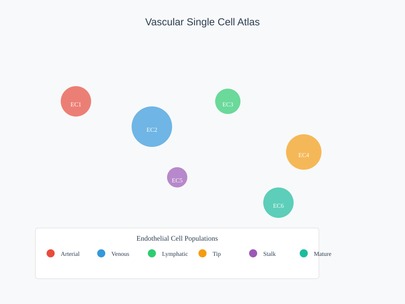
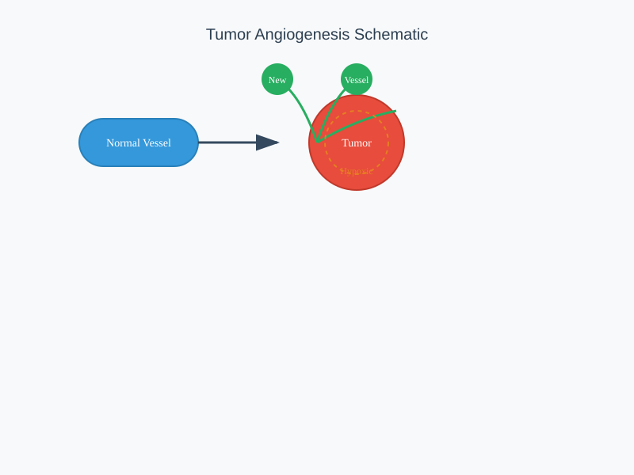
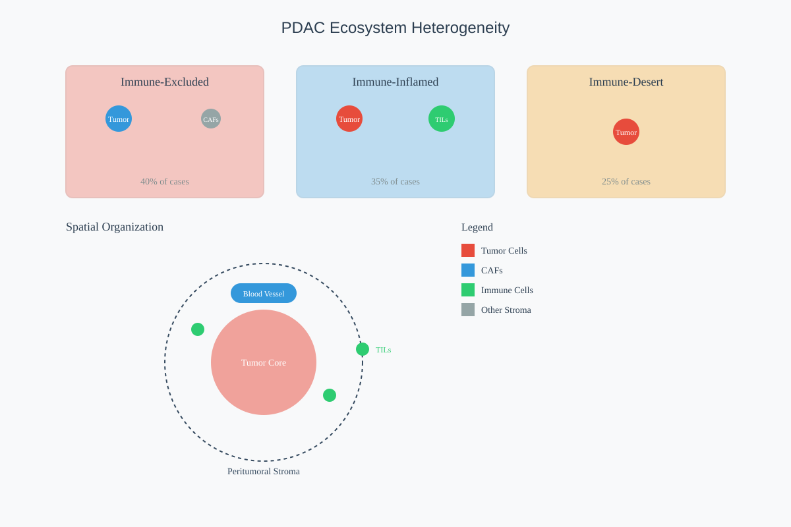
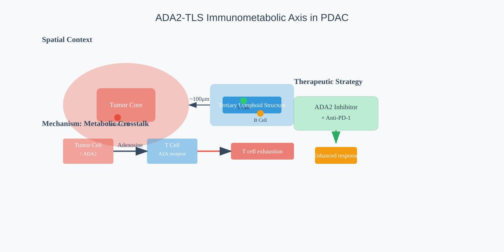

Our work constructs high-resolution single-cell atlases of tumor vasculature, revealing unprecedented diversity in endothelial cell populations and their angiogenic programs. By analyzing thousands of vascular cells across multiple tumor types, we uncover distinct molecular signatures associated with vessel normalization, immunogenicity, and therapeutic response.



Spatial organization of PDAC ecosystem ecotypes
Through integration of single-cell and spatial transcriptomics, we map the remarkable diversity of the pancreatic ductal adenocarcinoma (PDAC) microenvironment. Our work identifies distinct ecosystem ecotypes with unique cellular compositions and spatial architectures that predict clinical outcomes and therapeutic responses.
PANCOSMOS: An interactive resource platform developed to share our findings and enable exploration of PDAC ecosystem heterogeneity.

Moving beyond descriptive atlases, our mechanistic studies uncover the biological principles governing cellular interactions within the tumor microenvironment. By integrating spatial validation with multi-omics data, we identify key drivers of immune evasion and therapeutic resistance, revealing novel targets for intervention.
Current focus includes the ADA2-TLS immunometabolic axis in PDAC, where spatial transcriptomics reveals metabolic crosstalk between tumor cells and immune cells that influences treatment response.